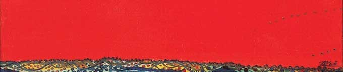

 Un paysage de ceux de toujours, sur lequel règne en maître un grand ciel rouge, immense, lisse, intense, saturé de couleur. Quand j’étais enfant, « le rouge m’éblouit » était une couleur, comme le rouge vermillon, le rouge carmin. J’ai mis longtemps de réaliser que c’était le titre d’un tableau ; le Rouge, ce Rouge là, avec un grand R, est le Rouge de Brô. Et ce Rouge, toujours, m’éblouit. La couleur, portée à ce degré de saturation, à cette intensité extrême, a comme un pouvoir magique, un pouvoir de fascination qui porte à l’éblouissement de l’œil, des sens, mais aussi de l’âme. Happée, prisonnière, éblouie par ce rouge essentiel, elle est prête à entrer dans le monde de Brô, à recevoir sans idée préconçue, cet univers de paix, d’espace, d’horizons sans fin, cette Nature du début du monde, qui ressemble pour au paradis que les Hommes ont perdu. La nature, que je la regarde dans le plus petit ou le plus grand, m’apparaît d’abord dans son désordre, combinaison infinie de formes et de couleurs, chaos absolu. Mais le désordre n’est qu’apparent. La plus petite contemplation permet de percevoir l’ordre éblouissant et divin qui est la Nature. Brô a posé son regard sans relâche sur cette Nature qu’il aimait dans ses manifestations de désordre apparent, et d’ordre profond. Ses toiles en sont l ‘évidence, création d’un monde à part, un Eden perdu, longtemps cherché et enfin retrouvé, dans l’accord extraordinaire des couleurs toujours fortes, jamais ennemies, des ciels immenses, des « arbres éternellement ronds », de cet horizon vibrant, libre et heureux, que contemplent les habitants de la planète Brô, mes frères muets aux yeux étirés comme des feuilles, mystérieux dans leur silence. Mon père est mort brutalement, dans le secret et la solitude. Les souvenirs de ces jours de douleur sont murés en moi. Le seul dont je veuille parler ici est lié à la couleur, au rouge, encore. Il ressemble à Brô par son étrangeté, son lien à l’absolue certitude d’être unique, d’être peintre. Un grand registre officiel, triste, épais, gris, empli de noms, et de noms, et de noms, celui des êtres humains morts sans identité ; seulement décrits, reconnus plus tard, identifiés enfin. Leurs noms écrits en noir sur des pages entières. Dans un bureau, j’ai donné à un employé le nom de mon père, pour qu’il l’écrive dans ce registre. L’homme a pris un stylo devant lui, au hasard, et il a écrit, au milieu d’une longue colonne de noms noirs, le nom de Brô à l’encre rouge. Le Rouge, toujours. Même dans la mort et son brouillard de larmes, le nom en rouge, au milieu de cette mer de lettres noires. Comme un signe pour moi que jamais le peintre ne mourrait. Me manquent le regard, et la main traçant les lignes mouvantes, si vivantes de cet horizon qui toujours, sera celui des paysages de mon enfance. A. Brault.
This website and its content is copyright of "Association des Amis de BRO" © 2012. All rights reserved.